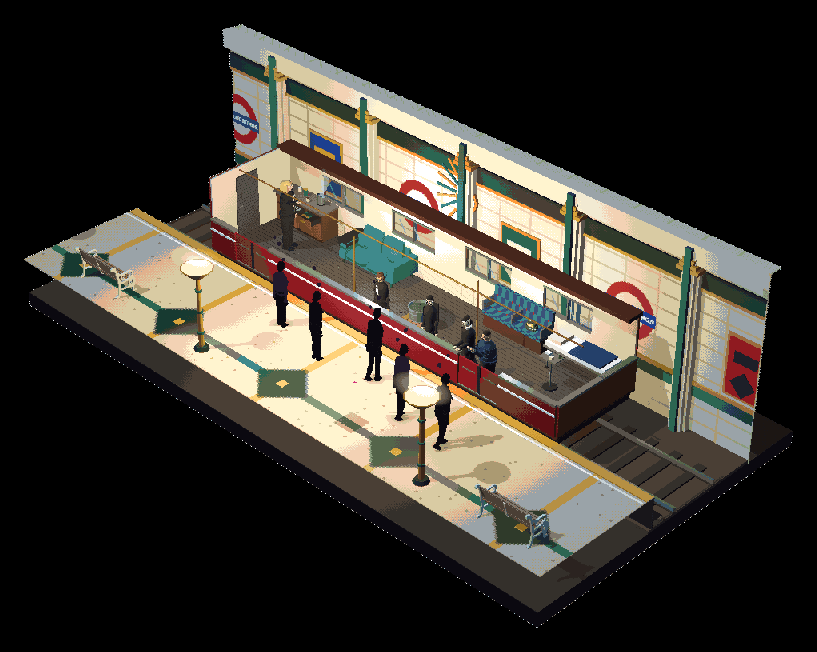
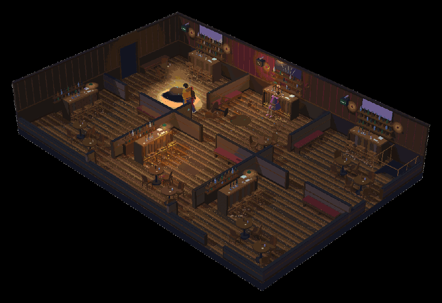
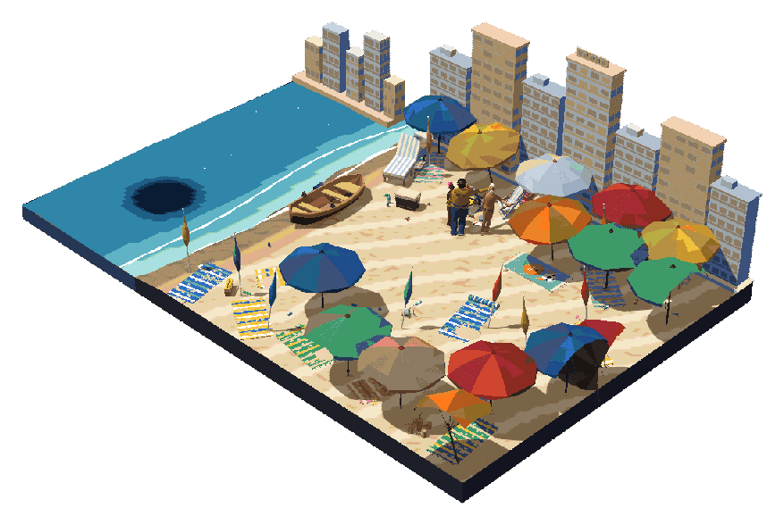
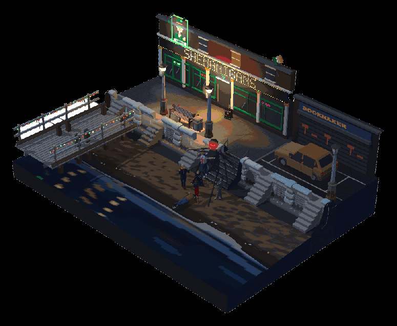
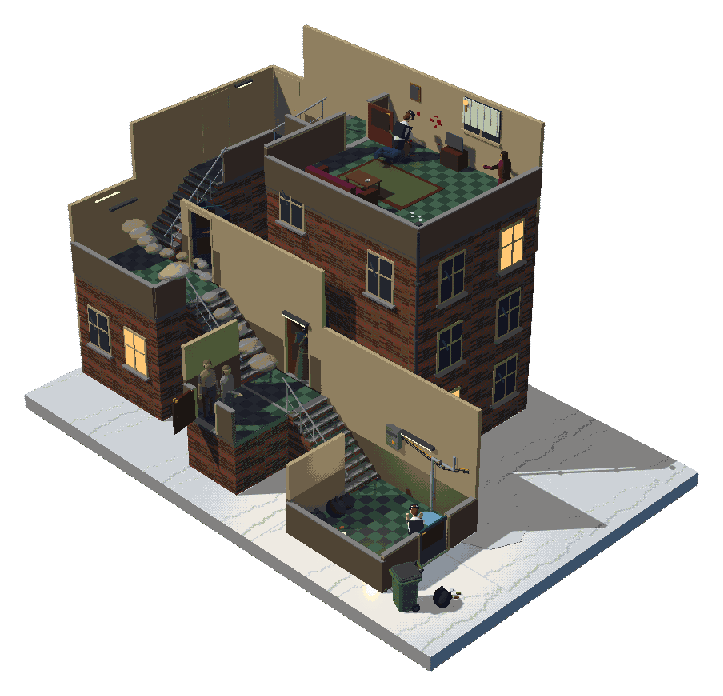
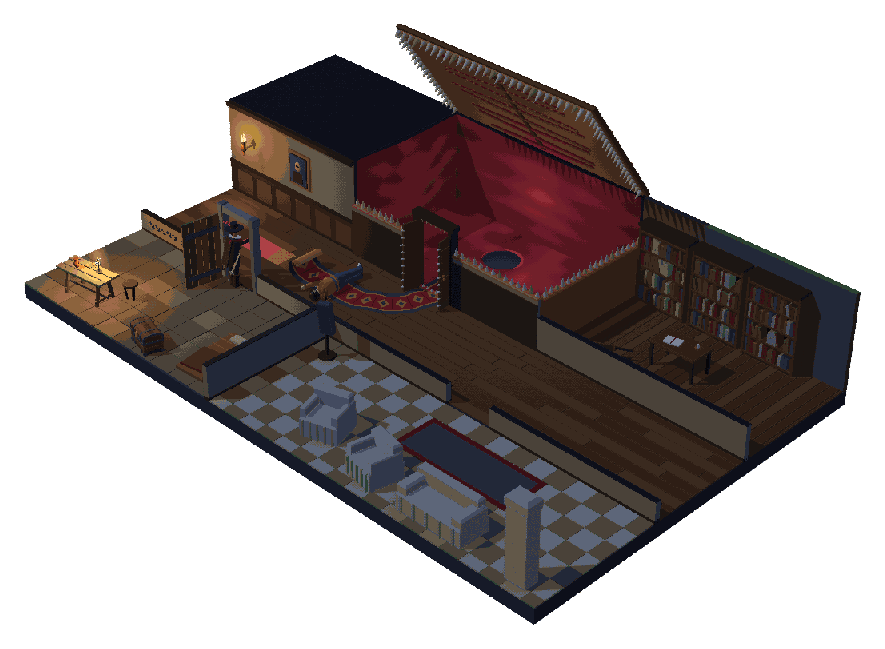

-

Capítulo IBucle de 49 s
La televisión
Un mercadillo de Camden, una Telefunken vieja y un amigo que revienta en vísceras para que de ellas nazca Astilla.
Abrir el diorama: La televisión Ver el vídeo de La televisión MP4
-

Capítulo IBucle de 50 s
El hombre que lee informes
Un despacho sin ventanas en lo alto de una torre de cristal. Jones trae un expediente: escala ocho.
Abrir el diorama: El hombre que lee informes Ver el vídeo de El hombre que lee informes MP4
-

Capítulo IIBucle de 50 s
Soho
Tallarines en el Lido, una chupona que bebe potencialidad, ojos que vigilan el cielo y una puerta escondida en un grafiti.
-

Capítulo IIBucle de 46 s
El Adelodromos
El vagón de los cerberos atraviesa túneles que nadie conoce. Muñeca saca la cabeza del agua del Támesis.
Abrir el diorama: El Adelodromos Ver el vídeo de El Adelodromos MP4
-

Capítulo IIIBucle de 50 s
El pub arquetipo
El bar definitivo: salas idénticas sin enchufes, un esqueleto con su banderita de 1987 y una mancha que huele a mar.
Abrir el diorama: El pub arquetipo Ver el vídeo de El pub arquetipo MP4
-

Capítulos IV · VIBucle de 50 s
El paraíso de Lali-lali
Mediodía eterno de agosto. Un lord expulsado, una nevera, cerveza, baile, arena en la cara y una rotura en el mar.
Abrir el diorama: El paraíso de Lali-lali Ver el vídeo de El paraíso de Lali-lali MP4
-

Capítulo VBucle de 48 s
La comisaría
Un interfono, un té horrible y una voz hecha de coros. Emily se resiste. La valkiria la levanta del suelo.
Abrir el diorama: La comisaría Ver el vídeo de La comisaría MP4
-

Capítulo VIBucle de 50 s
Blackpool
Mar helado, un paseo marítimo, cuatro fascistas con un mechero. La sombra de Astilla tiene demasiados brazos.
-

Capítulo VIIAnimación de 2:15
El viaje
Del aparcamiento de Blackpool a la puerta de Singāl Halls: un coche robado, Planet Rock, una foto de familia, una tormenta que se anuncia y una mansión con una sola luz encendida.
-

Capítulo VIIBucle de 50 s
Singāl Halls
Una residencia de lujo, una enfermera que gruñe, ancianos que tiemblan al tocar a Orlando y camillas con vías amarillas.
Abrir el diorama: Singāl Halls Ver el vídeo de Singāl Halls MP4
-

Capítulos VIII · IXBucle de 50 s
La estación blanca
Un gimnasio sobre raíles, una estación de mármol sin techo y tres mujeres vestidas de bandera que olfatean a Emily.
Abrir el diorama: La estación blanca Ver el vídeo de La estación blanca MP4
-

Capítulo XBucle de 50 s
El espejo de Dee
Bustos con la misma cara, un cuadro de 1582, sangre en el suelo y un espejo negro que se vuelve tinta.
Abrir el diorama: El espejo de Dee Ver el vídeo de El espejo de Dee MP4
-

Capítulo XIBucle de 46 s
El incidente
Una escalera de Londres levantada sobre mármol blanco, una porra que no para y una diosa de dos pisos que tiende la mano.
Abrir el diorama: El incidente Ver el vídeo de El incidente MP4
-

Capítulo XIIBucle de 50 s
El cuarto que come
Un despacho que se vuelve boca, una alfombra que es lengua y un soldado de los Tercios que llevaba años esperando.
Abrir el diorama: El cuarto que come Ver el vídeo de El cuarto que come MP4